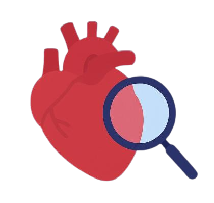

Heart disease is an umbrella term for conditions that prevent the heart from working at its best—think clogged coronary arteries, irregular rhythms, or a weakened pump. Left unchecked, these issues restrict blood flow and starve your organs of oxygen.
Subtle changes in blood pressure, cholesterol or ECG waves can be early warning lights. Catch them early and gain time to act before a heart attack or stroke strikes.
High blood pressure, cholesterol, diabetes, smoking, and sedentary habits all raise your heart disease risk. Awareness is the first step toward prevention.
Our model uses age, BP, cholesterol, ECG, and more to deliver an instant risk score. You'll know if you're in the clear—or if it's time to see your doctor.
Eat colorful vegetables, move daily, sleep well, quit smoking, and limit alcohol. These small habits make a big difference over time.
Enter patient data to receive a heart disease risk assessment.
